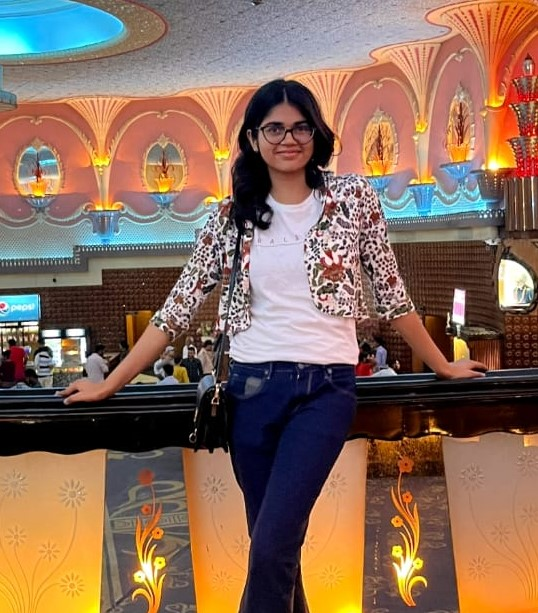

Swarna Jain
An aspiring web developer and tech enthusiast
Summary
Currently a sophomore at Manipal University Jaipur pursuing B.Tech in Computer Science and Engineering. Passionate about personal and professional growth, I am driven to continuously enhance my profile and develop myself as a well-rounded individual.
Educational Qualification
Bachelor of Technology in Computer Science (2022-2026)
- SSC (CBSE) 94%
- HSC (MPBSE) 87%
Experience
Marketing Team Head for ACM SIGBED MUJ Chapter.
Skills
- Technical Skills
- Non-Technical Skills
- Leadership Qualities
- Team spirit
- Patience
Sample Project
Click here to see my first sample project.
Awards and Achievements
- Participated in inter school projects like balvigyan and won the overall best performance
- Awarded as the best peer educator for the batch 2019
- Award of excellence, Queens College
Hobbies
- Discovering New Cafés
- Travelling
- Photography/Videography
Contact me!